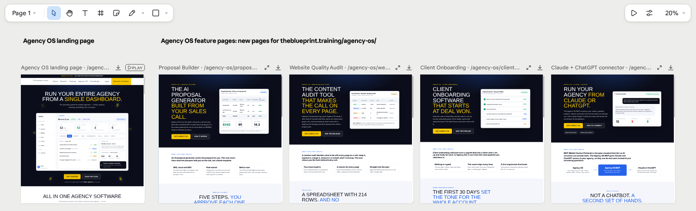
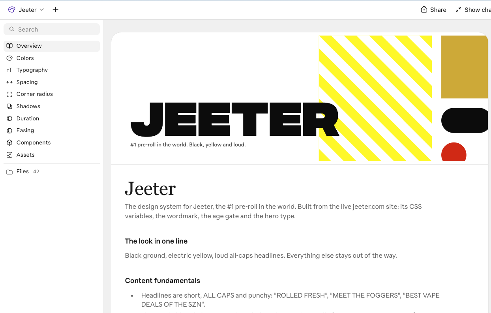
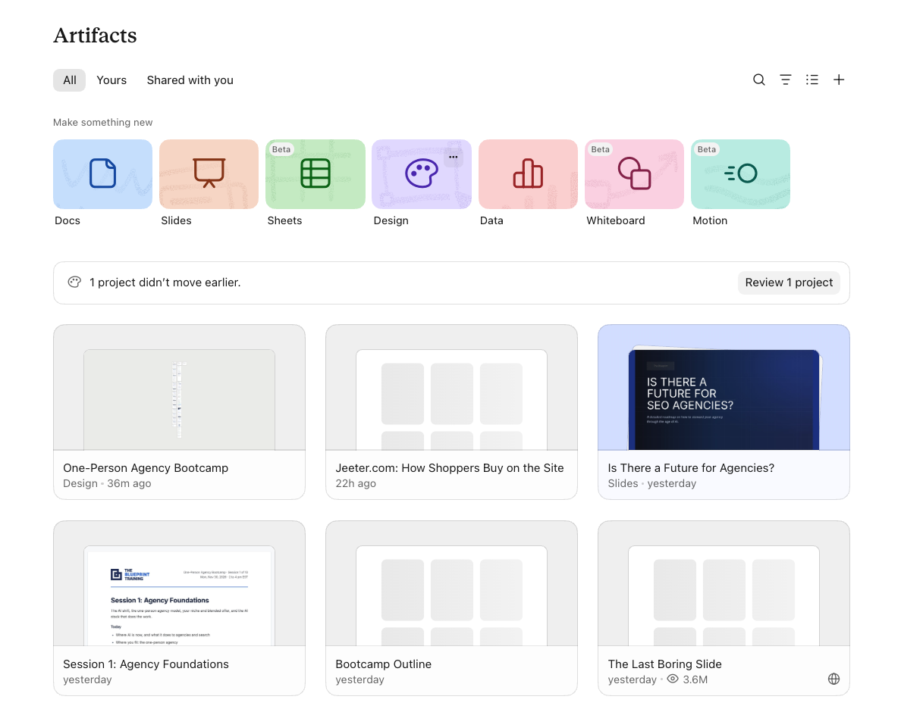

One shared board everyone can open, comment on and edit
The automated content marketing engine
Claude agents run around the clock on your site
They analyze what's published, find what to add or improve and draft the changes
You review and approve. Nothing ships without you
Agent audits the site
Rankings, gaps, outdated pages
→
Drafts the change
New page or an update
→
You approve
Comment or edit on the board
→
Published
Pushed to GitHub, live in seconds
"What about getting hacked?" Our WordPress sites got hacked. Always. A static site on Netlify has nothing to break into
"What about tracking and plugins?" Tell Claude. Analytics, call tracking, forms: describe it and it's built in
"My team needs WordPress to work together." Have you used Claude artifacts? Everyone opens the same board, comments and edits
"I'm not technical." You don't need to be. You talk to Claude in plain English
PART 2 · SET UP YOUR STACK
Before you migrate: set up your stack
Do this once, before you touch WordPress: your website folder, GitHub and Netlify
Once it is set up, every page you build in Part 3 goes straight to a live preview link, and your redirects run on Netlify
The 3 tools, in plain English
Tool
What it is
Think of it as
Cost
GitHub
Where your website's files live, with a full history of every change
Google Drive for your website
Free
Netlify (or Vercel)
Takes the files from GitHub and puts them on the internet. Every change you save goes live on its own
Your web host, minus the hosting panel
Free to start
Your domain registrar
Where you bought your domain: GoDaddy, Namecheap, Squarespace, Cloudflare
The sign that points people to your site
What you pay now
Claude
Your pages, designed
→
GitHub
Stores the files
→
Netlify or Vercel
Puts them online
→
Your domain
Points to the site
Netlify or Vercel? They work the same way. We use Netlify here: its free plan allows business sites. Vercel's free plan is for personal projects, so a business site needs its paid plan
Two ways to set it up
Option A: Claude does it for you
Option B: Click through it yourself
Use Claude Code (the Code tab in the Claude desktop app). It creates the repo, uploads the files and deploys the site. You just log in when it asks
Follow Setup 1 to 3 below. About 20 minutes the first time, with Claude on screen to help if you get stuck
Option A prompt (Claude Code)
Claude prompt
I've never used GitHub or Netlify. Set up my website stack for me: 0. Create a folder on my desktop called [myagency-website] with a simple placeholder home page (index.html) and a _migration folder that is never uploaded to GitHub.
1. If I don't have a GitHub account yet, walk me through signing up. Otherwise have me log in.
2. Create a private GitHub repository called [yoursite-website] and upload these files.
3. Connect the repository to Netlify so every change goes live on its own.
4. Give me the preview link (something.netlify.app). Do not connect my domain yet. That happens at launch.
Explain each step in plain English before you do it. Stop and ask me whenever you need me to log in or click something.
Claude can't create accounts or type passwords for you. You do the sign-ups, logins, email codes and Approve clicks. Claude does everything else.
Option B helper prompt (any Claude chat)
Claude prompt
I'm setting up GitHub and Netlify for the first time to publish my website. Walk me through it one step at a time. Tell me exactly what to click and what to type, then wait for me to say "done" before the next step. If I get stuck I'll send you a screenshot.
Setup 1: Your website folder
Make one folder on your desktop for your website, named after your site (example: myagency-website)
Everything goes in here: the sitemap, the WordPress export, your logo and images, and every finished page
This is the folder you connect to GitHub in Setup 2. Whatever is in it becomes your live site, so delete the _migration folder once the switch is done
In the Claude desktop app, add this folder to your project so Claude can read from it and save pages into it
myagency-websitethe folder on your desktop, synced to GitHub
Pages
index.html (home)
services/
about/
contact/
Assets
images/
logo.svg
styles.css
Setup files
sitemap.xml
_redirects
robots.txt
_migration/
wordpress-export.xml
page-inventory.csv
screenshots/
Claude prompt
Create a folder on my desktop called [myagency-website] and set it up as the home for my new website: a folder for pages, one for images and one called _migration for my WordPress export, sitemap and screenshots. Add a simple placeholder home page (index.html) so there is something to publish, and a .gitignore so the _migration folder is never uploaded to GitHub. Keep everything for the site in this folder from now on.
Setup 2: GitHub
Go to github.com and click Sign up. Enter your email, a password and a username
Enter the code GitHub emails you. Pick the Free plan
Click the + in the top right, then New repository
Name it (example: myagency-website), choose Private, click Create repository
On the next screen, click uploading an existing file
Drag in your placeholder index.html. It must sit at the top level, not inside a folder. Never upload the _migration folder
Click Commit changes. Your files are saved
github.com/new
Create a new repository
myagency-website
My agency website
Private Public
Create repository
Simplified view of GitHub's new repository screen
Or have Claude do it
Claude prompt
Run this in the Claude desktop app with my website folder [myagency-website] connected (Cowork or Claude Code). Set up GitHub for it: 1. Check if Git and the GitHub command line tool are installed. Install them if not. 2. Log me in to GitHub through the browser. If I don't have an account, open github.com/signup and wait while I create one. 3. Create a private repository called [myagency-website] and upload everything in the folder except _migration. 4. Show me the repository link when it's done. Stop and tell me whenever I need to log in, enter a code or click Approve.
Setup 3: Netlify
Go to netlify.com and click Sign up, then Sign up with GitHub. Approve the access request
Click Add new site, then Import an existing project
Pick GitHub, then choose your myagency-website repository. If you don't see it, click Configure the Netlify app on GitHub and give it access
Leave the build settings blank (plain HTML doesn't need them) and click Deploy
In about a minute you get a live link like myagency-website.netlify.app. That is your preview link. Your domain stays on WordPress until launch day (Part 4)
app.netlify.com/start
Let's deploy your project
1. Connect to Git provider2. Select repository3. Configure and deploy
main
Leave blank
Leave blank
Deploy myagency-website
Simplified view of Netlify's import screen
Using Vercel instead? Same flow: Sign up with GitHub, Add New, Project, Import your repo, Framework Preset Other, Deploy.
Or have Claude do it
Claude prompt
Run this in the Claude desktop app with my website folder [myagency-website] connected (Cowork or Claude Code). Connect my GitHub repository to Netlify: 1. Install the Netlify command line tool if I don't have it. 2. Log me in to Netlify through the browser. If I don't have an account, open netlify.com and wait while I sign up with GitHub. 3. Create a Netlify site linked to my [myagency-website] GitHub repository, so every change I push goes live on its own. No build command, publish the top-level folder. 4. Give me the preview link (something.netlify.app). Do not connect my domain yet. Stop and tell me whenever I need to log in or click Approve.
PART 3 · MIGRATING OFF WORDPRESS
Move your whole site into one Claude board
The goal: every page of your website designed on one Claude artifacts board
From there you edit, update and add pages by talking to Claude or editing the board directly
Then you publish it and turn WordPress off
Inventory
Every URL on the site
→
Design system
Your brand, captured
→
Content
Exported from WordPress
→
Artifact
Every page rebuilt
→
Publish
GitHub to Netlify, then switch

A real Claude artifacts board: every page of a website side by side (the Agency OS pages on theblueprint.training). Click any page to edit it
What you end up with: your website as a Claude board
Home
Services
Service: Local SEO
Service: LSAs
Who we serve
Results
Case study
About
Contact
Blog
Blog post
Design system
Which path are you on?
Not everyone is moving a site they like. Pick your path, then follow only the steps marked for it
Rebuilding still means redirects. A new design and new copy are fine, but every old URL has to point somewhere. That's where rebuilds lose their rankings
Step
MigrateKeep your content, new platform
RebuildStart over on what you have
New siteNo site yet
Page inventory + Search Console
Yes
Yes, to find pages with traffic or links
Skip
WordPress export
Yes
Only for content worth keeping
Skip
Redirects
Every one
Every one, even pages you cut
Skip
Site structure (Part 5)
Gap analysis
Gap analysis becomes your new sitemap
Straight from the recommended page list
Design system
From your current site, cleaned up
From scratch: your logo plus 2 or 3 sites you like
From scratch: your logo plus 2 or 3 sites you like
Page copy
Moved over, then edited
Rewritten with the content writer
Written with the content writer
Launch (Part 4)
Test old URLs, then switch the domain
Test old URLs, then switch the domain
Connect the domain, run the go-live checklist
Migrate
Follow Steps 1 to 6 below in order
Rebuild
Claude prompt
Run this in the Claude desktop app with my website folder connected. I'm rebuilding [mysite.com] from scratch with a new design and new copy, but I'm keeping my rankings. 1. Pull every URL from my sitemap and Search Console through Agency OS, plus every existing redirect, and mark which pages get clicks or links. 2. Use my site gap analysis as the new sitemap. 3. Build a new design system from my logo and these sites I like: [site1], [site2], [site3]. 4. Put every page of the new structure on a Claude board and write the copy with the content-writer skill. 5. Map every old URL to its new page in the redirect master list, including pages I'm cutting. Wait for me after each step.
New site
Claude prompt
Run this in the Claude desktop app with my website folder connected. I don't have a website yet. My offer: [services] for [niche] in [locations]. 1. Build my site structure: home, one page per service, one page per niche, proof and trust pages, and location pages only if I'm local and people search for them. 2. Build a design system from my logo and these sites I like: [site1], [site2], [site3]. 3. Put every page on a Claude board and write the copy with the content-writer skill. Wait for me after each step. I'll publish it with Part 4.
Step 1: Get a list of every page
Pull your sitemap: yoursite.com/sitemap_index.xml (Yoast, Rank Math) or yoursite.com/wp-sitemap.xml
Or crawl the site with Screaming Frog and export the URLs
Give the list to Claude
Claude prompt
Here is the sitemap for my website: [paste sitemap URL or file]. Build me a page inventory: every URL, its page title, and its page type (home, service, location, case study, blog post, utility). Group the pages by template so I can see which pages share a layout. Flag any pages that look thin, outdated or duplicated so I can decide whether to keep them.
Step 2: Build your design elements
Screenshot one of each template: home, a service page, a blog post, contact
Grab your logo, brand colors and fonts
Claude turns them into a design system every page on the board will use

A design system in Claude. Colors, typography, spacing and components are saved once, then every page you build uses them.
Claude prompt
These are screenshots of my current website and my logo. Create a design system for my site: colors, fonts, headings, buttons, spacing, cards, forms, header and footer. Keep the look of my current site but make it cleaner and more modern. This is the system every page I build next will use.
Step 3: Export your content
In WordPress: Tools, Export, All content. Download the XML file and save it in your website folder
That file has every page and post: titles, body copy, images and dates
Claude reads it and cleans it up page by page
Dashboard
Posts
Media
Pages
Comments
Appearance
Plugins
Users
Tools
Available Tools
Import
Export
Site Health
Settings
Export
When you click the button below WordPress will create an XML file for you to save to your computer.
Choose what to export
All content
Posts
Pages
Media
Download Export File
In your WordPress dashboard: Tools, then Export. Pick All content and click Download Export File (simplified view)
Claude prompt
This is my WordPress export file. For each page in my inventory, pull out the H1, the body copy, the meta title and description, and the images it uses. Strip out page builder code and shortcodes. Keep my wording. Flag anything outdated, like old prices, dates or team members.
Step 4: Build the board

The Artifacts section in Claude. Click Design under "Make something new" to start your website board. Everything you make shows up below, so you can reopen it anytime
Start a new Design artifact in Claude and name it after your site
Build the home page first. Get it right before you do anything else
Then one page per template, then batch the rest
Claude prompt
Create a Claude design board for my website using the design system we made. Add one artboard per page in my inventory, named by URL. Start with the home page using the content from my export. Keep the same URLs. Once I approve the home page, build one service page, then use it as the template for the rest.
Step 5: Don't lose your rankings
Same URLs. Every page keeps its exact slug
Same meta titles and descriptions, unless you're improving them on purpose
Carry over your existing redirects. Drop them and every old link pointing at those URLs breaks. Redirects hide in more places than you think, so check all of them:
WordPress itself: every time a page or post slug changed, WordPress quietly redirected the old slug. These live in the database, not in any plugin, and are the ones most people miss
Server files: .htaccess (Apache) or the nginx config
Your host's dashboard: WP Engine, Kinsta, SiteGround and others have their own redirect rules
Cloudflare: Page Rules, Redirect Rules and Bulk Redirects
Site-wide rules: http to https, www or non-www, trailing slashes, and an old permalink structure (like /2019/05/post-name/)
Domain forwarding at your registrar for old domains
Build a master list of every old URL. Search Console, Ahrefs, your crawl and your sitemap. You test every one of them on your Netlify preview link in Part 4, before you switch the domain
Schema, alt text and internal links carried over
Keep the WordPress backup for 30 days after you switch
Claude prompt
Run this in the Claude desktop app with my website folder connected (Cowork or Claude Code). I'm migrating [olddomain.com] from WordPress. Don't guess: use the files I give you.
1. Collect every redirect. Read every file in _migration: [Redirection / Rank Math / Yoast / AIOSEO export], [.htaccess or nginx rules], [host and Cloudflare redirect rules], and my WordPress export (pull every old slug WordPress saved as _wp_old_slug). Also cover site-wide rules: http to https, www vs non-www, trailing slashes, and my old permalink structure [example: /2019/05/post-name/].
2. Build one redirect file. Write a single _redirects file in Netlify format in my website folder. Every rule is a 301. Remove duplicates. Collapse chains so every old URL points straight to its final page in one hop. Flag any loops. Never send a page to the home page just to avoid a 404: map it to the closest matching page, and list the ones you're unsure about for me to decide.
3. Build the master URL list. Merge my Search Console export, Ahrefs Top pages and Best by links exports, my crawl and my old sitemap into one list of unique old paths, the pages with the most clicks and backlinks first. Save it as _migration/old-urls.csv. We'll test it in Part 4, before the domain switch.
Step 6: Edit and update from the board
Change text by clicking on it, the same way you'd edit a Google doc
Leave a comment on any part of a page and Claude makes the change
New page? Ask Claude to add an artboard using the same template
When a page is approved, Claude saves it in your website folder and pushes it to GitHub, so it shows up on your Netlify preview link
Every page you approved in Part 3 is already live on your Netlify preview link. Your domain still points at WordPress
Launching is three steps: test every old URL, switch the domain, run the go-live checklist
Test old URLs
On the preview link
→
Connect your domain
Point DNS at Netlify
→
Go-live checklist
Booking, tracking, Search Console
→
Live
WordPress can be switched off
Step 1: Test every old URL before you switch the domain
Your site is now live on its Netlify preview address (myagency-website.netlify.app), but your domain still points at WordPress. That's the window to test
Every old URL from your master list (Part 3) should land on the right page in one hop. Anything that 404s gets a redirect before launch
Manual check: Screaming Frog, Mode, List. Paste your old paths with the Netlify address in front and check the Response Codes tab for 404s and redirect chains
Or have Claude do the whole test for you:
Claude prompt
Run this in the Claude desktop app with my website folder connected (Cowork or Claude Code). My new site is live at [myagency-website.netlify.app]. Test my migration with real requests. Don't skip any URL and don't guess.
1. Test every old URL. For every path in _migration/old-urls.csv, request it on the Netlify address without following redirects, then again following them. Record: first status code, number of hops, final URL, final status code.
2. Check the landing pages. Open each final page and check it returns 200, has the right H1 and meta title, and its canonical tag points to itself.
3. Report and fix. Save _migration/redirect-test.csv with every result. Give me a short summary: total URLs tested, how many pass, and every failure grouped by type (404, redirect chain, loop, lands on the home page, wrong page, missing title or canonical). Fix what you can in _redirects, push the change, re-run the test, and show me what's left that needs my decision.
4. Launch day. When I tell you DNS has switched, run the exact same test against [mydomain.com] and report again.
Don't move to Step 2 until this report comes back clean.
Step 2: Connect your domain
In Netlify, open your site and go to Domain management, then Add a domain. Type your domain
Netlify shows you the DNS records to add. Leave that tab open
In a new tab, log in where you bought your domain (GoDaddy, Namecheap, etc.) and find DNS or DNS settings
Add the records exactly as Netlify shows them. Delete any old records that point to your WordPress host
Wait. It usually takes minutes, sometimes a few hours. HTTPS turns on by itself
your registrar · DNS settings
DNS records for myagency.com
TypeNameValue
A@copy from Netlify
CNAMEwwwcopy from Netlify
What you're adding at your registrar. Use the exact values your host gives you
Claude prompt
I'm connecting my domain to Netlify. Here's a screenshot of the records Netlify gave me and a screenshot of my DNS page at [registrar]. Tell me exactly what to add, change and delete, one row at a time.
Do this last, after the whole site is checked. The moment DNS switches, the new site is the live site.
Before you call it live
Domain connected with HTTPS working
Old URLs redirect. Step 1 passed with zero 404s
Booking works. Calendar link or form tested end to end, lands in your inbox and Agency OS
Google Tag Manager on every page (Part 5). Every other tag runs through it
GA4 recording visits through Tag Manager
Conversions firing: booking, form submit and phone click, each tested in Tag Assistant preview
Ad pixels through Tag Manager if you run ads: Google Ads conversion tag, Meta pixel
Search Console. Site verified and sitemap submitted
Schema passes the Rich Results Test on your home page and one service page
Run this in the Claude desktop app with my website folder connected. Publish my latest changes from my Claude board: save every page I changed into my website folder, push them to GitHub, and give me the live link once Netlify has updated. List what changed.
No Claude handy? Download the page from the board, then in GitHub click Add file, Upload files, Commit changes
Something broke? Every version is saved. In Netlify, go to Deploys and roll back with one click
PART 5 · SITE STRUCTURE FOR SEO AND AI SEARCH
The pages every agency site needs
You don't need to research this. Every agency selling search to a niche needs the same core pages. Use this list
One page per service, plus a page for each part of a service (link building under SEO, Google Ads under PPC). The full service list is built into the prompt below
Cut any service you don't sell. Add a page for anything you sell that isn't here
Every page links to the pages around it, so Google and AI tools can follow the whole story
Homewho you help, what you deliver, proof
Services
One page per service you sell
Plus a page for each part of it
Full list comes with the prompt
Who we serve
[Niche] marketing
One page per sub-niche
Locations
Only if you're local
Proof
Results
Case studies
One page per result
Reviews
Company
About
Team
Book a call
Blog
Claude prompt
Use the recommended page list for my agency website: SEO (with link building, content marketing and technical SEO), local SEO (with Google Business Profile), PPC (with Google Ads and Microsoft Ads), Local Services Ads, Meta ads, GEO, AEO, a [niche] marketing page plus one page per sub-niche, results, case studies, reviews, about, team, book a call and blog. I don't sell [services to cut]. I also sell [anything to add]. Build my site tree from it, with the URL for every page, and show it to me before you build anything.
Gap analysis: your site today vs. what it should be
Only if you have a site already. Line up the pages you have now against the recommended list above. Every difference is a page to build, rewrite, merge or cut
Run it right after your page inventory (Part 3, Step 1), so the board you build is the new structure, not a copy of the old site
Check what each old page brings in first, so you never cut a page that gets traffic
What you have
Page inventory + Search Console
→
What you need
The recommended page list
→
What competitors have
Top 3 in your niche
→
Gap list
Build, rewrite, merge, cut
What you give Claude
Page inventory from Part 3 (_migration/page-inventory.csv)
Search Console pages export: Performance, Pages tab, last 12 months, Export. This shows which pages get clicks
Your offer: the services, niche and locations from Session 1
Run this in the Claude desktop app with my website folder connected (Cowork or Claude Code). Do a site structure gap analysis for my website. My offer: [services] for [niche] in [locations]. Files: _migration/page-inventory.csv and my Search Console pages export [file name]. Competitors: [competitor1.com], [competitor2.com], [competitor3.com]. 1. Use the recommended page list (Part 5) as my target structure, minus services I don't sell: [list]. 2. Read my competitors' sites and list every page type they have that I don't. 3. Match every page I have now to the ideal structure. Give me a table: target page, my current URL, clicks in the last 12 months, action (keep, rewrite, merge, build or cut) and why. 4. Never mark a page with clicks as cut. Merge it into the closest new page instead. 5. Add every merged, cut or renamed URL to my redirect master list, with where it should point. 6. Save the table as _migration/site-gap-analysis.csv and show me the new site tree.
What it looks like
Target page
Current page
Action
Why
Home
/
Rewrite
Says "full-service digital marketing." Should lead with your niche and the result
Local SEO for [niche]
/seo-services/
Rewrite
Written for every industry. Keep the URL, it gets clicks
Google Ads for [niche]
None
Build
You sell it, but there's no page. All 3 competitors have one
Who we serve: [niche]
None
Build
No page tells Google or AI who you work with
Case study: [client]
/portfolio/
Rewrite
One page of logos. Split into one page per result
About
/about-us/
Keep
Fine as is. Update the photo and team
Local SEO for [niche]
/blog/what-is-seo/
Merge
Gets clicks but off-niche. Merge, then 301 to the service page
None
/web-design/
Cut
No clicks and not in your offer. 301 to home
Then build from the gap list
Build: each one becomes a new page on your Claude board
Rewrite: edit it on the board (Part 3, Step 6). Keep the URL if it gets clicks
Merge and cut: already on your redirect master list, so they get tested in Part 4 before launch
Schema: label everything for machines
Schema is code that tells Google and AI tools exactly what each page is
Organization on the home page: name, logo, contact, social profiles
Service on every service page
FAQPage on any page with FAQs
Claude writes it for you. Test it before you publish
Run this in the Claude desktop app with my website folder connected. Add schema (JSON-LD in the head) to every page of my site: Organization on the home page with my name, logo, URL, phone, email and social profiles; Service on every service page; FAQPage on any page with real FAQs; BreadcrumbList on every page below the home page; Person on team pages. Use only facts already on the page. Then list each page with the schema it got, and test my home page and one service page in Google's Rich Results Test.
Tracking: Tag Manager, GA4 and conversions
Google Tag Manager goes on every page. It's one container, and every other tag lives inside it: GA4, the Google Ads conversion tag, the Meta pixel, and call tracking if you ever use it
That means you never touch the site code again to add or change tracking
Track the actions that matter: booking completed, form submitted, phone number clicked, email clicked
You create the accounts (Tag Manager, GA4). Claude adds the code to every page and walks you through the tags
Create GTM + GA4
tagmanager.google.com, analytics.google.com
→
Claude adds GTM
Every page, plus conversion events
→
Tags in GTM
GA4, Google Ads, Meta pixel
→
Test, then publish
Tag Assistant preview
Claude prompt
Run this in the Claude desktop app with my website folder connected. Set up tracking on my site. 1. Add my Google Tag Manager container [GTM-XXXXXXX] to every page: the script in the head and the noscript tag right after the opening body tag. 2. Push a dataLayer event when someone completes a booking (booking_complete), submits a form (form_submit), clicks a phone number (phone_click) or clicks an email link (email_click). 3. Push the changes to GitHub. 4. Then walk me through Tag Manager one step at a time: the GA4 tag with my measurement ID [G-XXXXXXX], a GA4 event and key event for each of those four actions, the Google Ads conversion tag and the Meta pixel if I run ads. Wait for me after each step. 5. Have me test every event in Tag Assistant preview before I publish the container.
Pre trained content writer skill comes loaded into Agency OS
This is the same content skill we use to write for webris.org and theblueprint.training, cleaned up so it works for your agency
A skill is a set of instructions Claude loads every time you ask for that kind of work. You set it up once and every post follows the same rules
You bring your voice, your offer and your results. The skill brings the process
What it does on every post
Step
What Claude does
Research
Reads the live search results, finds the real questions behind the search, checks your site so it doesn't write a duplicate, then shows you a research brief and outline before writing
Sources and external links
Links every stat to the original study or official source, with a date. Never "studies show," never a link to another agency
Answer first, then prove it
The first lines under every heading answer the question, so Google and AI tools can quote that one paragraph. Every claim gets a number or an example, written for your buyer, not a marketer
Page structure
Service pages follow the same order every time: the answer, proof, how it works, who it's for, FAQs from your sales calls, one call to action
Chunking
No paragraph over two or three sentences. Lists, tables and bold key points so readers keep scrolling
Images
An image under every heading: real screenshots, or tables and charts built from the data. No fake screenshots, no text cards
Internal links
Links to your real pages only, then adds links to the new post from 2 or 3 older ones
Your voice
Writes the way you talk, from a voice file built from your own calls and emails
Publish
Builds the page in your site's design, adds schema, the sitemap and the blog index, and sends you a preview link to approve
It's already in Agency OS
Nothing to download or install. The content writer comes with Agency OS: connect Agency OS to Claude and it's there
It pulls your search data through Agency OS: Ahrefs or Semrush, Search Console and keyword volumes, from your own accounts
Your content plan lives on the content board in Agency OS. Add your own agency as a client, and the same writer works on every client site you manage
Test it: ask Claude "What does the content-writer skill do?"
Teach it your voice and your offer
The skill writes in your voice from a file called voice.md in your website folder. It builds that file with you the first time
Give it how you talk, not how you write. Polished copy just teaches it to sound like everyone else
It also saves offer.md: what you sell and where every post sends readers
Every time you fix the voice in a draft, tell Claude to update voice.md. It gets closer every post
Gather for your voice
2 to 3 sales call transcripts from your call recorder, where you explain your offer and handle objections
5 to 10 emails you wrote to clients or prospects. Your own replies, not templates
1 to 2 video or podcast transcripts where you explain what you do
5 social posts you wrote yourself: LinkedIn, Facebook, wherever you post
Your answers to the 3 questions prospects ask most. Record them on your phone and paste in the transcript
Words you never want used: jargon, buzzwords, anything that doesn't sound like you
Gather for your offer
Every service you sell, with prices or ranges if you share them
Your niche and any sub-niches
The locations you serve, if you're local
3 client results with numbers: before and after, time frame, what you did
The metric your buyers care about: booked jobs, signed cases, new patients
The one page every post sends readers to, usually your booking page
Claude prompt
Run this in the Claude desktop app with my website folder connected (Cowork or Claude Code). Use the content-writer skill to run voice setup. Here are samples of how I talk: [paste or attach 3 to 5 sales call transcripts, client emails or video transcripts]. Then interview me for offer.md: my services, my niche, the locations I serve, my best client results with numbers, and the page every post should send readers to. Show me both files before you save them.
Build your content plan
The plan is your agency's content board in Agency OS. Every card is a page or post, and it moves across the board as it's written, reviewed and published
Fix what you have first. If your site has been around a while, most of the plan is merging pages that compete with each other and rewriting pages stuck on page 2 to 4 of Google
Then fill the gaps: one page for every service and niche you sell. Location pages only if you're local and people actually search for them
Make it exhaustive. No cap on the total or on any type. If 30 service pages need rebuilding and 50 blog posts are worth writing, all 80 go in. It runs on autopilot, so give it everything
Blog posts come after the service pages and each one supports a service page
Where new topics come from
Source
What Claude looks for
Competitor gaps
Searches your top 3 competitors rank for that you don't rank for at all
Your services + niche
Every search around "[service] for [niche]" and "[niche] marketing." Buyer and problem searches only
Search Console
Searches you already show up for with no page built for them
Sales calls
The questions prospects actually ask, in their words
News
Law, platform and Google changes from the last 90 days that hit your buyers
AI answers
What your buyers ask ChatGPT and Perplexity, and which pages get cited
Your own data
Client results and studies nobody else can publish
What gets cut
Cost posts and "X vs. Y" comparisons. When we tested this on webris.org, "law firm SEO cost" got 40 searches a month and "SEO vs. PPC for lawyers" didn't register. They mostly attract price shoppers
Traffic that never buys: students, job seekers, event lists
Anything that doesn't link to a service page you sell
Claude prompt
Use the content-writer skill to build the content plan for my agency's website in Agency OS. Add my agency as a client if it isn't there yet. Read _migration/site-gap-analysis.csv and offer.md, and pull my sitemap, Search Console data and competitor data through Agency OS. My top 3 competitors: [competitor1.com], [competitor2.com], [competitor3.com]. The questions prospects ask most on sales calls: [paste them]. Make the plan exhaustive: every topic that passes the filters, no limit. Show me the plan as a table first: topic, target search, monthly searches, where I rank now, action (merge, rewrite, build or blog post), the service page it supports and why. Don't add anything to the content board until I approve it.
What it looks like
Topic
Where you are
Action
Why
Local SEO for [niche]
3 pages compete, all on page 3
Merge
Your main offer, split three ways
[Niche] marketing
Position 22
Rewrite
2,400 searches a month. You're one page from the top 10
Google Ads for [niche]
No page
Build
You sell it. All 3 competitors have a page
What [new law or Google change] means for [niche]
No page
Blog post
News your buyers are searching this month. Links to your service page
Write your first post with Claude
Do the first few by hand so you see every step and can correct it
Read the research brief before it writes. That's where you add what only you know: a result, a story, an opinion
Fill every [ORIGINAL INSIGHT OPPORTUNITY] it flags. That first-hand proof is what gets you ranked and quoted by AI
Research brief
Questions, sources, outline
→
You approve
Add your proof
→
Draft + images
Built in your site design
→
Preview link
On Netlify, not live yet
→
Publish
Say "publish"
Claude prompt
Run this in the Claude desktop app with my website folder connected. Use the content-writer skill to write the next topic on my agency's content board in Agency OS. Show me the research brief first and wait for my approval. Then write it, build the page in my site's design, add the internal links and push it to the drafts branch so I can check the Netlify preview link. Don't publish it until I say publish.
Put it on autopilot
Once a few posts come out right, schedule it. Claude writes the next post on its own every week
It never publishes on its own. Every post lands on a preview link and waits for you
Your job drops to 10 minutes a week: read the draft, add your proof, say "publish"
Every Tuesday
Scheduled task runs
→
Next topic
From your Agency OS content board
→
Researched + written
Pushed to drafts
→
You get a message
Preview link + what to add
→
You approve
It goes live
Claude prompt
Set up a scheduled task in the Claude desktop app that runs every Tuesday at 7am with my website folder connected. Each run: use the content-writer skill in scheduled mode. Take the next topic on my agency's content board in Agency OS, research it, write it in my voice, build the page with images and internal links, push it to the drafts branch only, and move the card to review with the preview link on it. Then send me the title, the Netlify preview link, the sources used and every [ORIGINAL INSIGHT OPPORTUNITY] I should fill. Never publish to the live site. If no topics are queued, tell me the plan is empty.
Keep your computer on and the Claude app open when it runs. The task works on the website folder on your computer
To publish, open the session, add your proof and say "publish." Claude merges it and Netlify puts it live
Running low on topics? Rerun the content plan prompt once a month with fresh Search Console data
AI drafts, you make it yours
Pull FAQs from your sales calls and emails. Those are the exact questions your buyers ask
Add what only you know: your results, your process, your opinions
Generic AI copy reads like everyone else's site. Your proof is what makes it rank, get cited and convert
We go deeper on content in Session 7
BEFORE SESSION 3
Action items
Set up your stack (Part 2)
Create your website folder and connect it to the Claude desktop app
Set up GitHub and Netlify and get your preview link working
Migrate and design (Parts 3 and 5)
Run your page inventory and gap analysis. Know every page you're keeping, rewriting, building, merging or cutting
Export WordPress and build your redirect master list. Every old URL, every existing redirect
Build your design system and your board. Every page of the new structure on one Claude board
Launch (Part 4)
Test every old URL on your preview link. Nothing left pointing at a 404
Connect your domain and run the go-live checklist: forms, booking, tracking
Verify Search Console and submit your sitemap
Content (Part 6)
Connect Agency OS to Claude, add your agency as a client, and set up voice.md and offer.md
Build your content plan on the Agency OS content board and publish your first post
Schedule the weekly autopilot once the first posts come out right
Post your live link in the community for feedback
Q&A
Ask anything from today
Tomorrow, Session 3: Getting Clients: Content and Ads. How you drive your niche to the site you just built